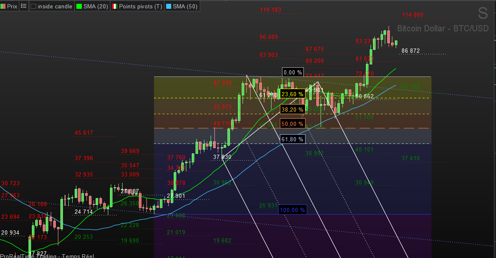
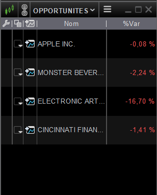
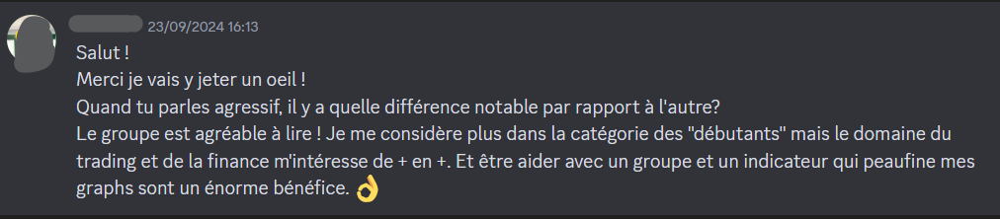
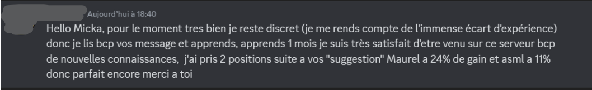

J’achetais de façon aléatoire puis je regardais mon portefeuille chuter juste après !! Actif en totale euphorie ou en tendance baissière, je n’avais aucun repère. Je suivais les autres, pas le prix.

Je n’achète plus sur des intuitions ou des rumeurs. Je n’entre que quand mes indicateurs se déclenchent — c’est-à-dire quand le prix devient enfin vraiment intéressant. Parfois, il ne se passe rien pendant des semaines, voire des mois. Et c’est très bien comme ça. Parce qu’un bon prix, ça se mérite.

Et enfin, l'outil qui te permettra de ne plus rater aucune opportunité: le scanner de marché qui va scanner automatiquement tous les déclenchements des indicateurs (Uniquement sur Pro Real Time).

Si tu veux en savoir plus...
Ils ont choisi de passer un cap dans leurs finances...


Une offre unique pour investir sereinement 💰
Reçois immédiatement tes indicateurs sur ta plateforme préférée
À tout de suite de l’autre côté, hâte de te voir arriver parmi nous !
(Contacte-moi directement sur X pour récupérer tes indicateurs. Si tu n'es intéréssé que par un seul indicateur, tu peux me contacter également)
Des Questions?
1. Sur quelles plateformes les indicateurs sont-ils disponibles ?
Ils ont été développés sur la plateforme de trading Pro Real Time et sur Trading View. A noter que l'offre sur Pro Real Time et celle sur Trading View sont deux offres différentes. L'une ne donne pas accès à l'autre.
2. Est-ce adapté aux débutants ?
Oui, justement ces outils ont été spécialement conçus pour être les plus efficaces et les plus simples d'utilisation possible. Tu pourras également me poser tes questions par messagerie
3. Quels sont les marchés couverts ?
La quasi-totalité des marchés (actions, crypto, indices)
4. Les indicateurs sont-ils utilisables en intraday ?
Non. Le but étant de passer le moins de temps possible devant les écrans, ils sont donc à utiliser sur des unités de temps journalière et hebdomadaire.